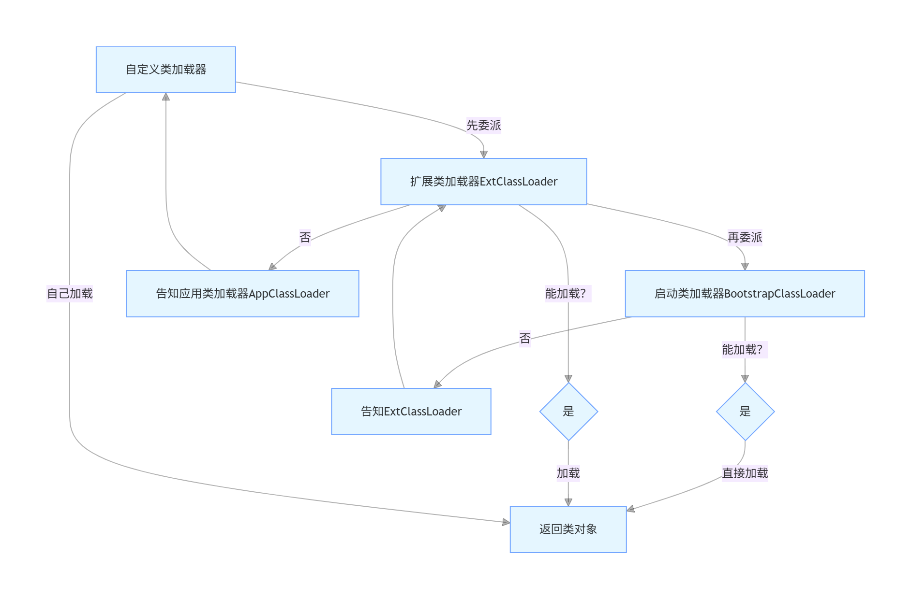

类加载机制
类加载过程

1. 加载（Loading）
核心作用：找到目标类的.class字节流，加载到JVM内存，生成代表该类的java.lang.Class对象（作为访问类数据的入口）。
具体执行步骤：
1. 获取字节流：通过类的全限定名（如com.example.User），从不同来源读取.class字节流（常见来源：本地硬盘、jar包、网络、动态生成（如动态代理）、数据库等）。
2. 转化存储结构：将字节流的静态存储结构（.class文件格式）转化为JVM方法区的运行时数据结构（存储类的元数据：字段、方法、常量池等）。
3. 生成Class对象：在堆内存中创建一个Class对象（唯一标识该类），作为程序访问方法区中类数据的“接口”。
示例场景：当你执行new User()时，JVM先检查User类是否已加载，若未加载则先执行加载阶段。
2. 验证（Verification）
核心作用：校验加载的.class文件是否符合JVM规范，排除恶意/非法字节码，保证运行安全。
四大校验维度（按执行顺序）：
| 校验类型 | 校验内容 |
|---|---|
| 文件格式验证 | 校验字节流的基础格式（如魔数是否为0xCAFEBABE、版本号是否兼容JVM、字节码长度合法等）。 |
| 元数据验证 | 语义校验类的元数据（如类是否有父类、是否继承了final类、方法参数/返回值类型合法等）。 |
| 字节码验证 | 校验方法体的字节码指令（如栈操作是否合法、类型转换是否安全、避免栈溢出/空指针等）。 |
| 符号引用验证 | 校验常量池中的符号引用（如引用的类/方法/字段是否存在、权限是否足够）。 |
异常提示：若验证失败，JVM会抛出VerifyError（或其子类，如NoClassDefFoundError），程序直接终止。
3. 准备（Preparation）
核心作用：为类的静态变量（类变量，static修饰） 在方法区分配内存，并设置默认初始值（零值）。
关键注意点：
- 仅处理静态变量：实例变量（非static）的内存分配在对象实例化时（new）进行，不在此阶段处理。
- 初始值是“零值”：静态变量会被赋JVM默认值，而非代码中定义的初始值。
- 基本类型零值：int→0、boolean→false、long→0L；
- 引用类型零值：null。 - final静态常量例外：如果是
static final修饰的常量（编译期常量），此阶段会直接赋代码中定义的初始值（如public static final int NUM = 10，准备阶段NUM直接设为10）。
4. 解析（Resolution）
核心作用：将方法区常量池中的符号引用转化为直接引用（内存地址）。
- 符号引用：用一组符号描述目标（如类的全限定名、方法名+参数类型），与内存布局无关（编译期就能确定）；
- 直接引用：直接指向目标的内存地址/偏移量，与内存布局绑定（运行时才能确定）。
解析对象：类/接口、字段、类方法、接口方法、方法句柄等。
灵活执行：解析阶段不是必须在准备后立即执行，JVM可在“需要时”（如执行到调用方法的指令时）才解析（动态解析），目的是支持Java的动态绑定（多态）。
5. 初始化（Initialization）
执行真正的赋值和静态代码块
核心作用：执行类的初始化方法<clinit>()，为静态变量赋代码中定义的初始值，执行静态代码块（static{}）。
关键特性：
1.
2. 执行顺序：父类的<clinit>()先于子类执行（因此父类的静态代码块/静态变量赋值会先完成）。
3. 触发条件：仅当类被主动使用时才会触发初始化（被动使用不触发），主动使用场景包括：
- 创建类的实例（new、反射、克隆、反序列化）；
- 调用类的静态方法；
- 访问类的非final静态变量；
- 反射调用（如Class.forName("com.example.User")）；
- 初始化子类时，父类会先初始化（除非子类仅访问父类的final静态变量）；
- JVM启动时指定的主类（包含main()方法的类）。
类加载器

类加载器有两种，一种是JVM内置，C++实现的Bootstrap Classloader，另一种是承自java.lang.ClassLoader，
使用java实现的类加载器，包括官方实现的Extension ClassLoader，Application ClassLoader, 以及用户可能自定义的类加载器
Bootstrap Classloader
Bootstrap ClassLoader 默认加载
这些 jar 包包含了 Java 核心类（如java.lang.String、java.lang.Object、java.util.ArrayList等）
由于 Bootstrap ClassLoader 是原生代码实现，并非 Java 对象，因此在 Java 代码中获取核心类的类加载器时，返回值为null
如果rt.jar缺失或损坏，Bootstrap ClassLoader 无法加载核心类，JVM 会直接启动失败，抛出NoClassDefFoundError
查看Bootstrap ClassLoader 加载路径
package com.yggdrasil.learn.classloader;
import java.io.File;
public class BootstrapClassLoaderTest {
public static void main(String[] args) {
// 获取Bootstrap ClassLoader的加载路径（系统属性）
String bootClassPath = System.getProperty("sun.boot.class.path");
// 按系统路径分隔符拆分（Windows是;，Linux/Mac是:）
String[] paths = bootClassPath.split(File.pathSeparator);
System.out.println("Bootstrap ClassLoader 加载路径：");
for (String path : paths) {
System.out.println(path);
}
}
}
输出
Bootstrap ClassLoader 加载路径：
C:\Program Files\Java\jdk1.8.0_333\jre\lib\resources.jar
C:\Program Files\Java\jdk1.8.0_333\jre\lib\rt.jar
C:\Program Files\Java\jdk1.8.0_333\jre\lib\sunrsasign.jar
C:\Program Files\Java\jdk1.8.0_333\jre\lib\jsse.jar
C:\Program Files\Java\jdk1.8.0_333\jre\lib\jce.jar
C:\Program Files\Java\jdk1.8.0_333\jre\lib\charsets.jar
C:\Program Files\Java\jdk1.8.0_333\jre\lib\jfr.jar
C:\Program Files\Java\jdk1.8.0_333\jre\classes
Extension ClassLoader

Extension ClassLoader具体指的是 sun.misc.Launcher$ExtClassLoader,
ExtClassLoader主要负责加载 %JRE_HOME%/lib/ext 目录下的 jar 包和类以及被 java.ext.dirs 系统变量所指定的路径下的所有类。
Application ClassLoader

Application ClassLoader具体指的是 sun.misc.Launcher$AppClassLoader,
AppClassLoader(应用程序类加载器)：面向我们用户的加载器，负责加载当前应用 classpath 下的所有 jar 包和类。
双亲委派机制

当一个类加载器需要加载某个类时，它不会先自己动手，而是先把这个“加载请求”交给自己的父类加载器去处理；父类加载器也会重复这个行为，直到请求传到最顶层的类加载器；
只有当顶层加载器无法加载这个类时，请求才会“向下回退”，由子类加载器自己尝试加载。
这里的“双亲”并不是指父类和母类，而是指父级类加载器（是组合关系，不是继承关系）。
双亲委派的核心实现（ClassLoader源码解析）
protected Class<?> loadClass(String name, boolean resolve) throws ClassNotFoundException {
synchronized (getClassLoadingLock(name)) {
// 1. 先检查这个类是否已经被加载过（缓存）
Class<?> c = findLoadedClass(name);
if (c == null) {
long t0 = System.nanoTime();
try {
// 2. 如果有父加载器，委派给父加载器加载
if (parent != null) {
c = parent.loadClass(name, false);
} else {
// 3. 没有父加载器（说明是Bootstrap），直接找Bootstrap加载
c = findBootstrapClassOrNull(name);
}
} catch (ClassNotFoundException e) {
// 父加载器加载失败，捕获异常（不抛出）
}
// 4. 父加载器加载失败，自己尝试加载
if (c == null) {
long t1 = System.nanoTime();
// findClass是自定义加载器需要重写的方法（核心加载逻辑）
c = findClass(name);
}
}
// 5. 解析类（可选）
if (resolve) {
resolveClass(c);
}
return c;
}
}
双亲委派机制的核心作用
- 保证类的唯一性：避免同一个类被不同加载器重复加载。比如
java.lang.String只会被Bootstrap加载，无论哪个子类加载器请求，最终都是顶层加载，保证JVM中只有一个String类的Class对象。 - 保护核心API安全：防止核心类被篡改。比如你自定义一个
java.lang.String类，由于双亲委派，请求会先到Bootstrap加载器，它会加载核心库的String，而不会加载你自定义的，避免恶意替换核心类。 - 遵循类加载的优先级：核心类（JDK自带）优先加载，应用类后加载，符合Java的设计逻辑。
打破双亲委派的场景
双亲委派不是强制规则，某些场景下会被打破（重写loadClass()方法）：
- SPI机制：比如JDBC驱动加载（java.sql.Driver），核心类DriverManager由Bootstrap加载，但它需要加载应用中的驱动类，因此通过Thread.currentThread().getContextClassLoader()获取应用类加载器，打破委派；
- Tomcat类加载：Tomcat为了实现不同Web应用的类隔离，自定义了类加载器，打破了双亲委派；
- OSGi框架：为了实现模块化热部署，也会自定义类加载逻辑。